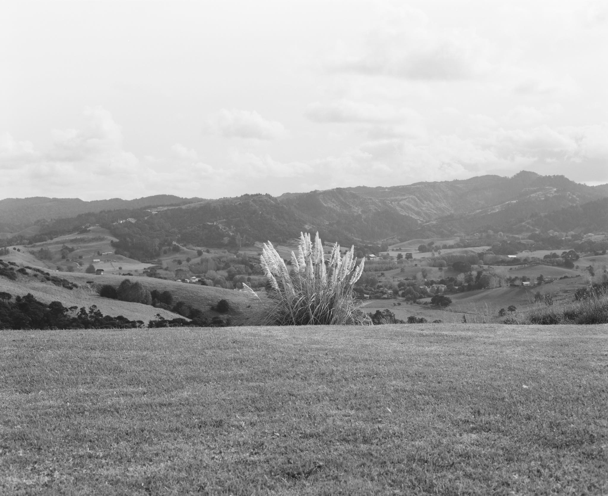
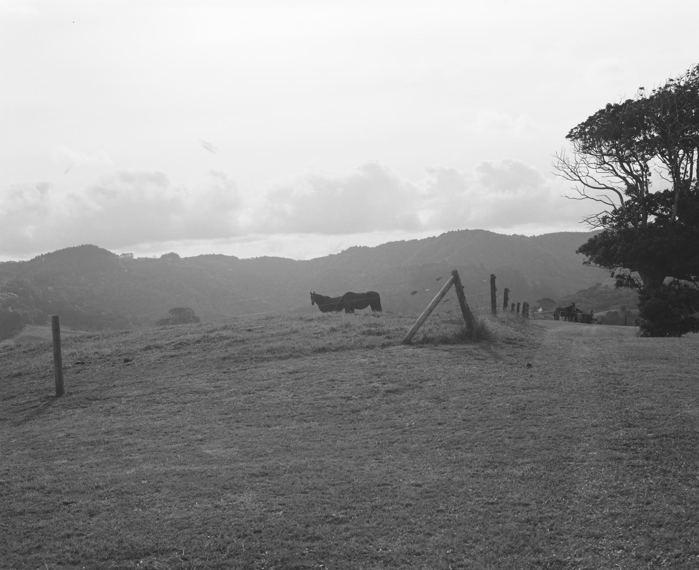
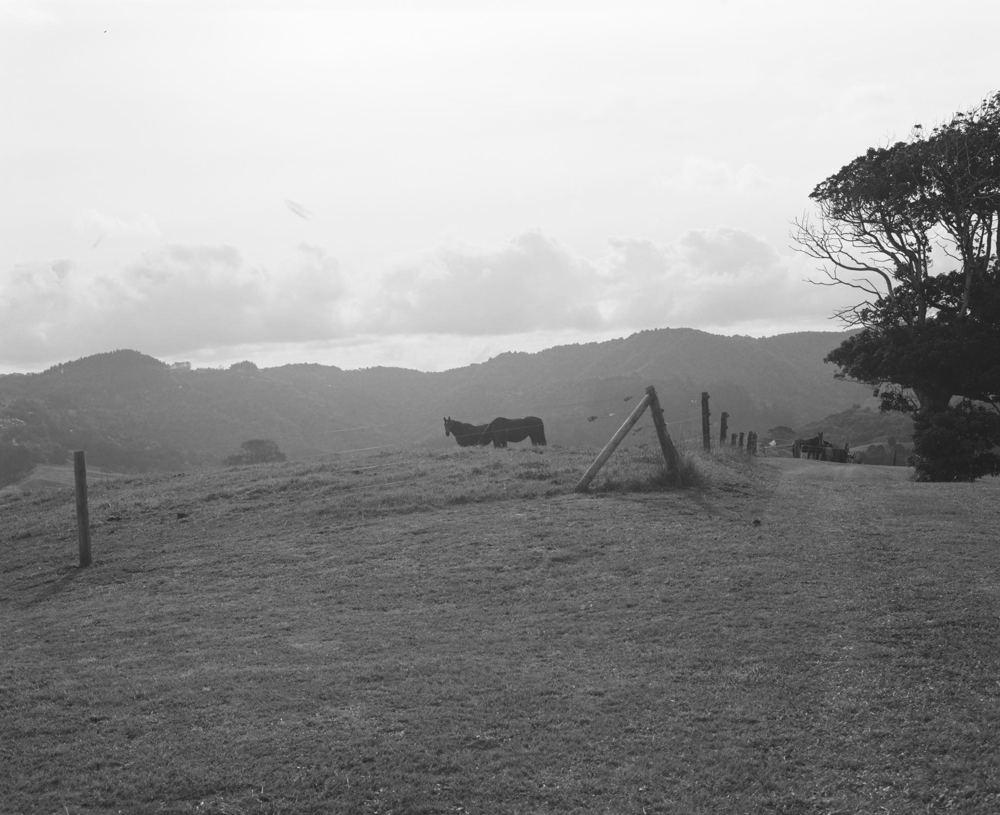

Located one hour north of Auckland, New Zealand, the studio was acoustically engineered by Tim Farrant, lovingly built over a summer, and upgraded in early 2021. It's both an intimate yet high quality production room as well as a creative retreat, with the surrounding landscape offering a quiet space to think and write.
This is where I spend 90% of my time, it's a difficult place to leave. I have also enjoyed working here with talented artists such as This Pale Fire, Gala George (pictured below), Suren Unka, and Jeremy Redmore.
 

And what studio is complete without some resident horses?

Special thanks to my friend Sam Clarke for these photographs.